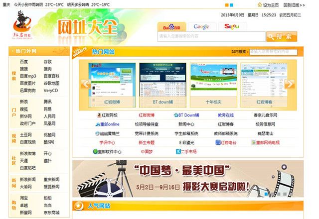

一、新媒体平台
1.微信平台
请关注“重邮小帮手” 微信平台：
二、黄桷网事
我校的校园网建设非常的棒,网上资源应有尽有。还有一个不错的地方就是——重庆邮电大学“红岩网校”http://202.202.43.125/,如果有什么需要的话可以到上面的查找。当然除了这些正规的负责日常事务的网站外,还有好多其它网站:娱乐性的诸如重邮Online、BT下载中心等;服务类的如软件中心、学识中心等。为了便于大家更加详细的了解校内网络资源,我们将同学们经常访问的校内网站,作一简单介绍:
1.学校主页
学校的门户网站http://www.cqupt.edu.cn/
2.红岩网校
我校校园网上最大的门户型网站,各种资讯、资料应 有尽有。http://202.202.43.125/
3.团建在线
校团委的门户网站,在这里你可以浏览各个学院共青 团工作的最新信息。http://202.202.43.125/gqt/
4.学生处
学生处的网站,对于学生来说,在这里可以下载到助学 金、国家奖学金、助学贷款的相关表格,可以看到学 校对于这些奖助贷的最新政策。 http://xsc.cqupt.edu.cn/xsc/
5.招生就业信息网
这是我校每年大四毕业的学生最关注的网站,这里有我校每年要来的招聘单位的相关信息,即使不是毕业班,看一看，可以给自己找找动力。http://job.cqupt.edu.cn/
6.教务在线
这个网站也是学生必上的网站,看课表、查成绩、看老师安排,了解学校最新的教务信息,一定要去这里,这里最官方最权威。http://jwzx.cqupt.edu.cn
7.网址大全
囊括了校园网中所有网站的网址信息,它就是你在校 园网中畅游的地图。http://202.202.43.125/web
8.重邮Online
我校最受欢迎、人气指数最高的校园网络互动社区,重邮人自己的“校内网”。http://202.202.43.125/online/portal.php
9.BT Down铺
我校人气最旺的BT下载网站,每天都有新的电影、音乐、程序软件等等资源可以下载。http://172.22.161.11(内网)
10.软件中心
我校最大的软件下载站点，所有的软件均是有学生自己上传，这里肯定有你需要的软件。http://202.202.43.124(内网)
11.红岩微博
获得最新最热的资讯,网页、手机随时随地分享生活点滴。http://202.202.43.125/t/
12.锦瑟南山
我校最大、最全的文化创意网站。http://202.202.43.125/jsnswx/
13.学识中心
学习上有困难的同学可以网站求助,获得志愿者点对点的帮助,当然还可以下载学习资料、教师教案等。http://hongyan.cqupt.edu.cn/xszx/
14.学生邮件系统
校内邮箱登陆地址,学校会给每个人分配一个邮箱,登陆地址就在这里。http://stu.cqupt.edu.cn
15.网上图书馆
你可以在这个网站查看自己借阅的图书信息、可以网上续借,当然除了这个,从这里你还可以进入论文数据库、超星图书馆、万方数据库、维普数据库等等无情无尽的网络文献资源。http://www.cqupt.edu.cn/tsg/
三、学生申请宽带账号流程
1、 持本人有效证件（身份证、一卡通）到数图315用户服务室领取业务登记单及套餐协议单；
2、 按模板填写，保证信息准确无误；
3、 工作人员核实信息后，进行业务受理；
4、 业务受理完成，宽带账号三个工作日之内开通， 用户充值激活后即可使用。